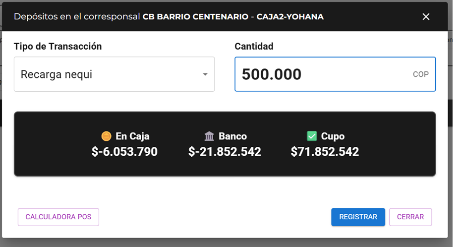

4. Cambios en la lógica de movimientos de depósitos o retiros solicitados por Terceros
En la versión actual de coban365, cuando el cajero registra un movimiento de tipo Depósito o de tipo Retiros y luego escoge el tipo de transacción, coloca la cantidad y da "Registrar", ese movimiento siempre afecta la caja.
Pero para aquellos casos donde el movimiento solicitado es por un TERCERO este valor debe afectar es a la cuenta de ese tercero y no la caja.

Cambio requerido A PROGRAMAR
Cuando el movimiento es de tipo Depósito y lo solicita un tercero que tenga balance positivo (el CB ya le debe a ese tercero) o un cupo disponible, resultado:
El valor no debe entrar a caja: debe descontarse del saldo que el CB le debe a ese tercero o del cupo que tiene asignado el tercero.
Para eso se necesita:
Un selector de destino del dinero: Caja o Tercero (recomendación de usabilidad abajo).
Si es Tercero: una lista corta (5–10) de terceros con su estado de saldo y cupo, más un buscador arriba para encontrar cualquier otro que no esté en la lista corta.
El botón Registrar solo se activa hacia un tercero si: su cupo disponible ≥ cantidad, o tiene saldo a favor (aunque no tenga cupo). Si no cumple ninguna, la operación debe informar que NO SE PUEDE REALIZAR.
Recomendación de usabilidad: un interruptor tipo "segmented control" (Caja / Tercero) es más claro que un checkbox o un select, porque dejar 2 opciones mutuamente excluyentes y visibles todo el tiempo evita errores de selección. Al elegir "Tercero", se despliega un buscador + lista corta con selección por clic (no un dropdown largo), porque con solo 5–10 terceros frecuentes es más rápido para el cajero que escribir en un combo. Pruébalo abajo.
Propuesta de formulario para movimientos de ingreso/salida desde terceros
Simulador Dashboard Cajero
Esta es la propuesta final del dashboard del cajero: conservando el diseño actual de los colores, botones y secciones del dashboard que ya existe en producción, en este simulador se muestran los cambios solicitados con anterioridad en otras pestañas.
En este simulador podemos ver como debería quedar:
El título del cajero.
Los tooltips solicitados en el Cambio 1 del Rol Cajero.
El selector de destino Caja / Tercero dentro del popup de movimientos para Depósitos y Retiros.
El modal de Terceros (idéntico al de la pestaña Terceros (A)).
Al ser interactivo podemos hacer movimientos de clientes de caja, movimientos de entrada y salida solicitados por terceros.
Debajo del formulario se incluye una sección que lleva a cabo la conciliación de los movimientos que se ejecutan en este formulario de cajeros y el historial de transacciones para analizar con el programador.
☰
🔗 Compartir
YOHANA MONTERROSA
🖨️Reporte Diario de Caja⊞Cierre de Caja👥Estado de Terceros$Comisiones de Terceros🧾Movimientos Tercero🔄Actualizar
Resumen financiero
🧑
En caja
$0
🏛️
Banco
$0
💲
Cupo
$0
Movimientos
Fecha
Tipo
Valor
Efectivo
Nota
Acciones
Filtrar por categoría:Valor:
Filtrar por fecha
A. Detalle de la conciliación de los movimientos del simulador del cajero
1. Saldo en Caja (efectivo disponible)$0
2. Deuda de Terceros
+ Terceros que le deben al CB (CxC)$0
− Terceros a quienes el CB les debe (CxP)$0
− Comisiones por pagar (bancaria + dispersión generadas)$0
3. Deuda al Banco (actual)$0
4. Total Esperado (debe cuadrar con la deuda al banco)$0
B. Historial de movimientos del simulador del cajero
Cada préstamo de tercero registrado desde el modal de Terceros queda aquí con el detalle de antes/después de caja, banco, cupo, del tercero que envía, del tercero que recibe (si aplica) y de las comisiones generadas — para verificar que coinciden exactamente con lo que se refleja arriba en el Detalle de la Conciliación.
Depósitos en el corresponsal CB BARRIO CENTENARIO - CAJA2-YOHANA✕
🟡 En Caja$0
🏦 Banco$0
✅ Cupo$0
Solo se listan los terceros habilitados para depósitos/retiros por datáfono (configurado al crear el tercero).
Se hereda del nombre configurado en el formulario de creación de tercero de la pestaña Terceros (normalizado).
La lógica de este tipo de transacción todavía no se ha definido en el simulador; por ahora solo Préstamo de Tercero calcula el resultado.
Este método no afecta la deuda del CB con el banco: afecta al tercero dueño del corresponsal seleccionado (el dinero compensó allá, no en el código propio).
El formulario no cambia para este método: al registrar, el sistema recibe el dinero y lo compensa automáticamente contra la deuda del propio CB con el banco. No requiere cuenta destino ni pasa por caja.